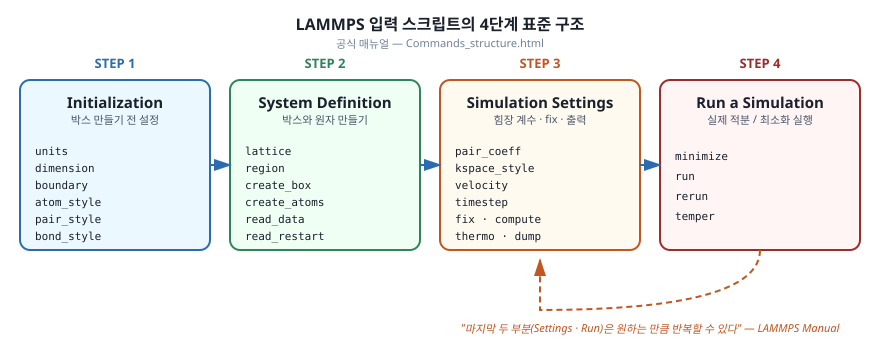

2.1 매뉴얼이 정의하는 4단계 구조
LAMMPS 공식 매뉴얼은 "전형적인 입력 스크립트는 다음 네 부분으로 구성된다"고 명시합니다.
- 초기화 (Initialization) — 원자를 만들거나 읽기 전에 정해야 하는 전역 설정
- 시스템 정의 (System Definition) — 시뮬레이션 박스와 원자를 만드는 단계
- 시뮬레이션 설정 (Simulation Settings) — 힘장 계수, 출력, fix 등 모든 운영 옵션
- 실행 (Run a Simulation) —
minimize,run등 실제 적분/최소화 명령
매뉴얼은 또한 "마지막 두 부분은 원하는 만큼 반복할 수 있다"고 밝히고 있습니다. 즉, 한 입력 파일 안에서 설정 변경 → 짧은 run → 다른 설정 → 또 run 처럼 여러 단계를 잇대어 쓰는 것이 정상적인 사용 방식입니다.
이 4단계 구조는 입력 스크립트를 짤 때 명령어 순서를 결정하는 가장 큰 원리이므로, 작성할 때마다 머릿속에 떠올려 두시면 좋습니다.

2.2 단계별 핵심 명령어
1단계: 초기화
원자가 만들어진 후에는 바꿀 수 없는 전역 설정들을 먼저 선언합니다.
| 명령 | 역할 |
|---|---|
units |
단위계 선택 (lj, real, metal, …) |
dimension |
시뮬레이션 차원 (2 또는 3) |
boundary |
경계 조건 (p 주기적, f 고정, s 축소, m 다항식) |
atom_style |
원자가 가지는 속성 종류 (atomic, charge, full, …) |
newton |
작용-반작용 처리 방식 |
processors |
MPI 프로세스 분할 방식 |
pair_style, bond_style 등 |
상호작용 모델의 종류 선언 |
2단계: 시스템 정의
박스와 원자를 만드는 단계입니다. 매뉴얼이 제시하는 방법은 세 가지입니다.
- 데이터 파일에서 읽기:
read_data - 재시작 파일에서 읽기:
read_restart - 격자/영역을 정의하고 원자를 채우기:
lattice→region→create_box→create_atoms
분자 단위 시스템(단백질, 폴리머 등)은 거의 항상 read_data 로 외부 파일에서
읽어들이고, 결정 또는 단순 액체는 격자에서 직접 만드는 편입니다.
3단계: 시뮬레이션 설정
이 단계에서 가장 많은 명령이 등장합니다.
| 명령 | 역할 |
|---|---|
pair_coeff, bond_coeff 등 |
힘장 계수 입력 |
kspace_style |
장범위 정전기 알고리즘 (ewald, pppm) |
neighbor, neigh_modify |
이웃 리스트 관리 |
group |
원자 집합을 이름으로 묶기 |
velocity |
초기 속도 설정 |
timestep |
적분 시간 간격 |
fix |
NVE/NVT/NPT, 제약, 외력 등 거의 모든 운영 효과 |
compute |
특정 양(에너지, RDF 등) 계산 정의 |
thermo, dump |
화면 출력 / 좌표 출력 |
restart |
재시작 파일 저장 주기 |
4단계: 실행
| 명령 | 역할 |
|---|---|
minimize |
에너지 최소화 |
run |
지정 스텝 수만큼 동역학 적분 |
rerun |
기존 trajectory를 다시 처리 |
temper |
parallel tempering(레플리카 교환) |
run 또는 minimize 명령이 호출돼야만 실제 계산이 시작됩니다. 그 전까지의
모든 명령은 단순히 "설정을 누적"할 뿐입니다.
2.3 1장 예제 다시 보기
1장에서 본 LJ 액체 예제를 위 4단계로 다시 분해하면 다음과 같습니다.
# === 1단계: 초기화 ===
units lj
atom_style atomic
# === 2단계: 시스템 정의 ===
lattice fcc 0.8442
region box block 0 10 0 10 0 10
create_box 1 box
create_atoms 1 box
mass 1 1.0
# === 3단계: 시뮬레이션 설정 ===
pair_style lj/cut 2.5
pair_coeff 1 1 1.0 1.0 2.5
velocity all create 1.44 87287 loop geom
neighbor 0.3 bin
neigh_modify every 20 delay 0 check no
fix 1 all nve
thermo 50
# === 4단계: 실행 ===
run 250
이 정도 단위로 주석을 달아두면, 나중에 다시 읽을 때 어떤 명령이 어떤 단계에 속하는지 한눈에 보입니다. 작은 습관 같지만 입력 파일 수가 늘어날수록 큰 차이를 만듭니다.
2.4 알아 두면 좋은 문법 요소
주석과 줄 바꿈
#으로 시작하는 줄은 주석입니다. 한 줄 안에서#뒤도 주석으로 무시됩니다.- 명령이 길어질 때는 줄 끝에
&를 붙여 다음 줄로 이어 쓸 수 있습니다.
fix 1 all npt &
temp 300.0 300.0 100.0 &
iso 1.0 1.0 1000.0
변수와 치환
variable 로 입력 안에서 변수를 정의하면 ${var} 형태로 어디서나 참조할 수
있습니다.
variable T equal 300.0
variable seed equal 12345
velocity all create ${T} ${seed}
fix 1 all nvt temp ${T} ${T} 100.0
명령줄에서 변수를 주입할 수도 있습니다 (-var 또는 -v).
lmp -in in.run -var T 400 -var seed 99999
여러 온도에서 같은 입력을 돌릴 때 매우 편리합니다.
include — 입력 파일 분할
입력이 길어지면 include 로 여러 파일에 나눠 두는 것이 좋습니다.
include ff_opls.in # 힘장 정의 한 파일
include system.in # 박스/원자 한 파일
응용 시리즈에서는 이 패턴을 적극 사용합니다.
2.5 다음 단계
4단계 구조를 머릿속에 그렸다면, 그 가장 첫 단계인 단위계 선택과 원자 표현 부터 자세히 들여다보겠습니다. 같은 시뮬레이션도 어떤 단위에서 돌리느냐에 따라 입력값과 출력값 모두 의미가 달라지므로, 처음에 한 번만 잘 정해 두면 이후가 훨씬 편해집니다.